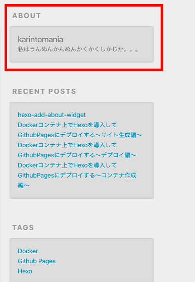
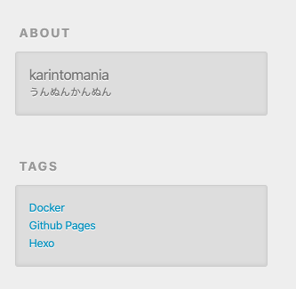
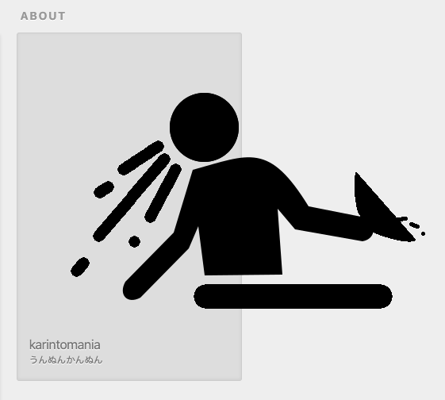
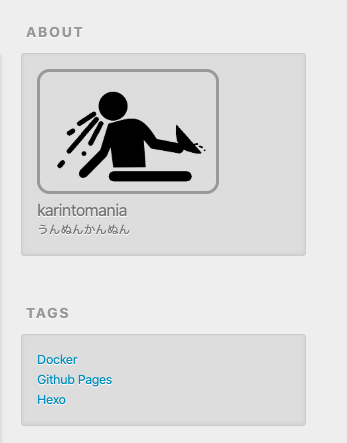

<!DOCTYPE html>
<html>
<head>
  <meta charset="utf-8">
  
<!-- Global site tag (gtag.js) - Google Analytics -->
<script async src="https://www.googletagmanager.com/gtag/js?id=UA-161452704-1"></script>
<script>
  window.dataLayer = window.dataLayer || [];
  function gtag(){dataLayer.push(arguments);}
  gtag('js', new Date());

  gtag('config', 'UA-161452704-1');
</script>
<!-- End Google Analytics -->

  
  <title>Hexoでサイドバーにウィジェット(プロフィール)を追加する | 寝室コンピューティング</title>
  
  <meta name="viewport" content="width=device-width, initial-scale=1, shrink-to-fit=no">
    <!-- OGP settings -->
	
  <meta name="description" content="こんにちは。karintomania(twitter)です。Hexoで作ったブログにウィジェットを追加する方法を紹介します。サイドバーにこんな感じの著者プロフィールウィジェットを追加してみます。landscapeをテーマに使用している前提で記載していますので、別のテーマを使用している場合は適宜読み替えてください。     ウィジェット用テンプレートの追加ウィジェットのテンプレートを追加します。まず">
<meta name="keywords" content="Hexo">
<meta property="og:type" content="article">
<meta property="og:title" content="Hexoでサイドバーにウィジェット(プロフィール)を追加する">
<meta property="og:url" content="https:&#x2F;&#x2F;www.bedroomcomputing.com&#x2F;2019&#x2F;10&#x2F;2019-1030-hexo-add-about-widget&#x2F;index.html">
<meta property="og:site_name" content="寝室コンピューティング">
<meta property="og:description" content="こんにちは。karintomania(twitter)です。Hexoで作ったブログにウィジェットを追加する方法を紹介します。サイドバーにこんな感じの著者プロフィールウィジェットを追加してみます。landscapeをテーマに使用している前提で記載していますので、別のテーマを使用している場合は適宜読み替えてください。     ウィジェット用テンプレートの追加ウィジェットのテンプレートを追加します。まず">
<meta property="og:locale" content="en">
<meta property="og:image" content="https:&#x2F;&#x2F;www.bedroomcomputing.com&#x2F;2019&#x2F;10&#x2F;2019-1030-hexo-add-about-widget&#x2F;about_style.png">
<meta property="og:image" content="https:&#x2F;&#x2F;www.bedroomcomputing.com&#x2F;2019&#x2F;10&#x2F;2019-1030-hexo-add-about-widget&#x2F;about_plane.png">
<meta property="og:image" content="https:&#x2F;&#x2F;www.bedroomcomputing.com&#x2F;2019&#x2F;10&#x2F;2019-1030-hexo-add-about-widget&#x2F;about_setting.png">
<meta property="og:image" content="https:&#x2F;&#x2F;www.bedroomcomputing.com&#x2F;2019&#x2F;10&#x2F;2019-1030-hexo-add-about-widget&#x2F;author.png">
<meta property="og:image" content="https:&#x2F;&#x2F;www.bedroomcomputing.com&#x2F;2019&#x2F;10&#x2F;2019-1030-hexo-add-about-widget&#x2F;about_image.png">
<meta property="og:image" content="https:&#x2F;&#x2F;www.bedroomcomputing.com&#x2F;2019&#x2F;10&#x2F;2019-1030-hexo-add-about-widget&#x2F;about_style.png">
<meta property="og:updated_time" content="2020-06-08T18:04:26.688Z">
<meta name="twitter:card" content="summary">
<meta name="twitter:image" content="https:&#x2F;&#x2F;www.bedroomcomputing.com&#x2F;2019&#x2F;10&#x2F;2019-1030-hexo-add-about-widget&#x2F;about_style.png">
  
  
    <link rel="icon" href="/css/images/favicon.ico">
  
  
    <link rel="stylesheet" href="https://cdn.jsdelivr.net/npm/typeface-source-code-pro@0.0.71/index.min.css">
  
  <link rel="stylesheet" href="/css/style.css">
  
    <link rel="stylesheet" href="/fancybox/jquery.fancybox.min.css">
  
  <script data-ad-client="ca-pub-2164726777115826" async src="https://pagead2.googlesyndication.com/pagead/js/adsbygoogle.js"></script>
</head>

<body>
  <div id="container">
    <div id="wrap">
      <header id="header">
  <div id="banner"></div>
  <div id="header-outer" class="outer">
    <div id="header-title" class="inner">
	  <div id="logo-wrap">
      <h1>
        <a href="/" id="logo">寝室コンピューティング</a>
      </h1>
      
        <h2 id="subtitle-wrap">
          <a href="/" id="subtitle">オフィスでするほどでもない開発を寝室から</a>
		</h2>
	</div>
      
    </div>
    <div id="header-inner" class="inner">
      <nav id="main-nav">
        <a id="main-nav-toggle" class="nav-icon"></a>
        
          <a class="main-nav-link" href="/">Home</a>
        
          <a class="main-nav-link" href="/about">About</a>
        
          <a class="main-nav-link" href="/archives">Archives</a>
        
          <a class="main-nav-link" href="/portfolio">Portfolio</a>
        
      </nav>
      <nav id="sub-nav">
        
        <a id="nav-search-btn" class="nav-icon" title="Search"></a>
      </nav>
      <div id="search-form-wrap">
        <form action="//google.com/search" method="get" accept-charset="UTF-8" class="search-form"><input type="search" name="q" class="search-form-input" placeholder="Search"><button type="submit" class="search-form-submit">&#xF002;</button><input type="hidden" name="sitesearch" value="https://www.bedroomcomputing.com"></form>
      </div>
    </div>
  </div>
</header>
      <div class="outer">
        <section id="main"><article id="post-2019-1030-hexo-add-about-widget" class="article article-type-post" itemscope itemprop="blogPost">
  <div class="article-meta">
    <a href="/2019/10/2019-1030-hexo-add-about-widget/" class="article-date">
  <time datetime="2019-10-30T17:42:03.000Z" itemprop="datePublished">2019-10-30</time>
</a>
    
  <div class="article-category">
    <a class="article-category-link" href="/categories/%E6%8A%80%E8%A1%93/">技術</a>
  </div>

  </div>
  <div class="article-inner">
    
    
      <header class="article-header">
        
  
    <h1 class="article-title" itemprop="name">
      Hexoでサイドバーにウィジェット(プロフィール)を追加する
    </h1>
  

      </header>
	
    <div class="article-entry" itemprop="articleBody">
	
      
		<h2>目次</h2>
		<ol class="toc"><li class="toc-item toc-level-2"><a class="toc-link" href="#ウィジェット用テンプレートの追加"><span class="toc-text">ウィジェット用テンプレートの追加</span></a></li><li class="toc-item toc-level-2"><a class="toc-link" href="#設定ファイルから値を取得"><span class="toc-text">設定ファイルから値を取得</span></a></li><li class="toc-item toc-level-2"><a class="toc-link" href="#画像の追加"><span class="toc-text">画像の追加</span></a></li></ol>
        <p>こんにちは。<a href="https://twitter.com/karintozuki" target="_blank" rel="noopener">karintomania(twitter)</a>です。<br>Hexoで作ったブログにウィジェットを追加する方法を紹介します。<br>サイドバーにこんな感じの著者プロフィールウィジェットを追加してみます。<br>landscapeをテーマに使用している前提で記載していますので、別のテーマを使用している場合は適宜読み替えてください。  </p>


<h2 id="ウィジェット用テンプレートの追加"><a href="#ウィジェット用テンプレートの追加" class="headerlink" title="ウィジェット用テンプレートの追加"></a>ウィジェット用テンプレートの追加</h2><p>ウィジェットのテンプレートを追加します。<br>まずはabout.ejsをtheme&gt;landscape&gt;layout&gt;_widget内に追加します。<br>他のejsファイルを参考にしつつ、こんな感じにしました。</p>
<figure class="highlight html"><figcaption><span>about.ejs</span></figcaption><table><tr><td class="gutter"><pre><span class="line">1</span><br><span class="line">2</span><br><span class="line">3</span><br><span class="line">4</span><br><span class="line">5</span><br><span class="line">6</span><br><span class="line">7</span><br></pre></td><td class="code"><pre><span class="line"><span class="tag">&lt;<span class="name">div</span> <span class="attr">class</span>=<span class="string">"widget-wrap"</span>&gt;</span></span><br><span class="line"><span class="tag">&lt;<span class="name">h3</span> <span class="attr">class</span>=<span class="string">"widget-title"</span>&gt;</span>About<span class="tag">&lt;/<span class="name">h3</span>&gt;</span></span><br><span class="line"><span class="tag">&lt;<span class="name">div</span> <span class="attr">class</span>=<span class="string">"widget"</span>&gt;</span></span><br><span class="line">	<span class="tag">&lt;<span class="name">h3</span>&gt;</span>karintomania<span class="tag">&lt;/<span class="name">h3</span>&gt;</span></span><br><span class="line">	<span class="tag">&lt;<span class="name">p</span>&gt;</span>私はうんぬんかんぬんかくかくしかじか。。。<span class="tag">&lt;/<span class="name">p</span>&gt;</span></span><br><span class="line"><span class="tag">&lt;/<span class="name">div</span>&gt;</span></span><br><span class="line"><span class="tag">&lt;/<span class="name">div</span>&gt;</span></span><br></pre></td></tr></table></figure>

<a id="more"></a>

<p>そして、widgetを追加するには、_config.ymlをいじる必要があります。<br>この_config.ymlは使用しているテーマ内のものなので、プロジェクト全体のものと間違わないようにしてください。  </p>
<figure class="highlight yaml"><figcaption><span>landscape > _config.yml</span></figcaption><table><tr><td class="gutter"><pre><span class="line">1</span><br><span class="line">2</span><br><span class="line">3</span><br><span class="line">4</span><br><span class="line">5</span><br><span class="line">6</span><br><span class="line">7</span><br><span class="line">8</span><br><span class="line">9</span><br></pre></td><td class="code"><pre><span class="line"><span class="comment"># Sidebar</span></span><br><span class="line"><span class="attr">sidebar:</span> <span class="string">right</span></span><br><span class="line"><span class="attr">widgets:</span></span><br><span class="line"><span class="bullet">-</span> <span class="string">about</span>  <span class="comment"># aboutを追加</span></span><br><span class="line"><span class="bullet">-</span> <span class="string">category</span></span><br><span class="line"><span class="bullet">-</span> <span class="string">tag</span></span><br><span class="line"><span class="bullet">-</span> <span class="string">tagcloud</span></span><br><span class="line"><span class="bullet">-</span> <span class="string">archive</span></span><br><span class="line"><span class="bullet">-</span> <span class="string">recent_posts</span></span><br></pre></td></tr></table></figure>

<p>そしてHexo serverコマンドでサイトをプレビューするとAboutウィジェットが追加されているはずです。<br></p>
<p>これだけでは技術的にも絵的にも少し物足りないので、<br>もう少し工夫します。 </p>
<h2 id="設定ファイルから値を取得"><a href="#設定ファイルから値を取得" class="headerlink" title="設定ファイルから値を取得"></a>設定ファイルから値を取得</h2><p>まずは著者名は設定ファイルに持っているので、そこから持ってくるようにしましょう。<br>プロジェクトのconfig.ymlの値はconfig変数に持っているようです。  </p>
<p>また、テーマのconfig.ymlの内容はtheme変数に持っています。<br>説明文用のプロパティをテーマのconfig.ymlに追加して取得させてみます。</p>
<figure class="highlight yaml"><figcaption><span>landscape>_config.yml</span></figcaption><table><tr><td class="gutter"><pre><span class="line">1</span><br><span class="line">2</span><br><span class="line">3</span><br><span class="line">4</span><br><span class="line">5</span><br><span class="line">6</span><br><span class="line">7</span><br></pre></td><td class="code"><pre><span class="line"><span class="comment"># Site</span></span><br><span class="line"><span class="attr">title:</span> <span class="string">ただの技術メモ</span></span><br><span class="line"><span class="attr">subtitle:</span></span><br><span class="line"><span class="attr">description:</span></span><br><span class="line"><span class="attr">keywords:</span></span><br><span class="line"><span class="attr">author:</span> <span class="string">karintomania</span> <span class="comment"># 参照元の著者名</span></span><br><span class="line"><span class="string">....</span></span><br></pre></td></tr></table></figure>

<p>config.yml末尾に新規プロパティを追加します。</p>
<figure class="highlight yaml"><figcaption><span>theme>_config.yml</span></figcaption><table><tr><td class="gutter"><pre><span class="line">1</span><br><span class="line">2</span><br></pre></td><td class="code"><pre><span class="line"><span class="comment"># about</span></span><br><span class="line"><span class="attr">author_description:</span> <span class="string">"うんぬんかんぬん"</span>  <span class="comment"># 新しくauthor_descriptionプロパティを追加</span></span><br></pre></td></tr></table></figure>

<p>about.ejsは以下のようになります。<br>&lt;%= 変数 %&gt;で変数を参照することができます。<br>また、今回は説明文にマークダウンを使えるようマークダウンヘルパー markdown()を使用しています。<br>ヘルパーを使用する際は&lt;%- 関数 %&gt;と%の後にハイフンを続けます。<br>単なる変数参照の時と若干記法が違うので気をつけてください。  </p>
<figure class="highlight html"><figcaption><span>about.ejs</span></figcaption><table><tr><td class="gutter"><pre><span class="line">1</span><br><span class="line">2</span><br><span class="line">3</span><br><span class="line">4</span><br><span class="line">5</span><br><span class="line">6</span><br><span class="line">7</span><br></pre></td><td class="code"><pre><span class="line"><span class="tag">&lt;<span class="name">div</span> <span class="attr">class</span>=<span class="string">"widget-wrap"</span>&gt;</span></span><br><span class="line"><span class="tag">&lt;<span class="name">h3</span> <span class="attr">class</span>=<span class="string">"widget-title"</span>&gt;</span>About<span class="tag">&lt;/<span class="name">h3</span>&gt;</span></span><br><span class="line"><span class="tag">&lt;<span class="name">div</span> <span class="attr">class</span>=<span class="string">"widget"</span>&gt;</span></span><br><span class="line">	<span class="tag">&lt;<span class="name">h3</span>&gt;</span><span class="tag">&lt;<span class="name">%=</span> <span class="attr">config.author</span> %&gt;</span><span class="tag">&lt;/<span class="name">h3</span>&gt;</span></span><br><span class="line">	<span class="tag">&lt;<span class="name">p</span>&gt;</span><span class="tag">&lt;<span class="name">%-</span> <span class="attr">markdown</span>(<span class="attr">theme.author_description</span>) %&gt;</span><span class="tag">&lt;/<span class="name">p</span>&gt;</span></span><br><span class="line"><span class="tag">&lt;/<span class="name">div</span>&gt;</span></span><br><span class="line"><span class="tag">&lt;/<span class="name">div</span>&gt;</span></span><br></pre></td></tr></table></figure>

<p>きちんと反映されていますね。</p>
<p></p>
<h2 id="画像の追加"><a href="#画像の追加" class="headerlink" title="画像の追加"></a>画像の追加</h2><p>さて、著者の画像も追加してみます。</p>
<p><br>画像の置き場はtheme/landscape/source/css/images/author.pngとします。<br>これもconfig.ymlにプロパティとして持たせておきましょう。</p>
<figure class="highlight yaml"><figcaption><span>theme>_config.yml</span></figcaption><table><tr><td class="gutter"><pre><span class="line">1</span><br><span class="line">2</span><br><span class="line">3</span><br></pre></td><td class="code"><pre><span class="line"><span class="comment"># about</span></span><br><span class="line"><span class="attr">author_description:</span> <span class="string">"うんぬんかんぬん"</span>  <span class="comment"># 新しくauthor_descriptionプロパティを追加</span></span><br><span class="line"><span class="attr">author_image:</span> <span class="string">"css/images/author.png"</span></span><br></pre></td></tr></table></figure>

<p>これをejsファイルから参照する際には、相対パスは使用できません。<br>代わりにurl_for関数を使用します。この関数はURLを自動的に生成してくれます。</p>
<figure class="highlight html"><figcaption><span>about.ejs</span></figcaption><table><tr><td class="gutter"><pre><span class="line">1</span><br><span class="line">2</span><br><span class="line">3</span><br><span class="line">4</span><br><span class="line">5</span><br><span class="line">6</span><br><span class="line">7</span><br><span class="line">8</span><br><span class="line">9</span><br></pre></td><td class="code"><pre><span class="line"><span class="tag">&lt;<span class="name">div</span> <span class="attr">class</span>=<span class="string">"widget-wrap"</span>&gt;</span></span><br><span class="line">	<span class="tag">&lt;<span class="name">h3</span> <span class="attr">class</span>=<span class="string">"widget-title"</span>&gt;</span>About<span class="tag">&lt;/<span class="name">h3</span>&gt;</span></span><br><span class="line">	<span class="tag">&lt;<span class="name">div</span> <span class="attr">class</span>=<span class="string">"widget"</span>&gt;</span></span><br><span class="line">		<span class="comment">&lt;!-- url_forで著者の画像URLを生成している --&gt;</span></span><br><span class="line">		<span class="tag">&lt;<span class="name">img</span> <span class="attr">src</span>=<span class="string">"&lt;%- url_for(theme.author_image) %&gt;"</span> <span class="attr">alt</span>=<span class="string">"著者"</span> <span class="attr">class</span>=<span class="string">"author_img"</span>&gt;</span></span><br><span class="line">	<span class="tag">&lt;<span class="name">h3</span>&gt;</span><span class="tag">&lt;<span class="name">%=</span> <span class="attr">config.author</span> %&gt;</span><span class="tag">&lt;/<span class="name">h3</span>&gt;</span></span><br><span class="line">	<span class="tag">&lt;<span class="name">p</span>&gt;</span><span class="tag">&lt;<span class="name">%-</span> <span class="attr">markdown</span>(<span class="attr">theme.author_description</span>) %&gt;</span><span class="tag">&lt;/<span class="name">p</span>&gt;</span></span><br><span class="line">	<span class="tag">&lt;/<span class="name">div</span>&gt;</span></span><br><span class="line"><span class="tag">&lt;/<span class="name">div</span>&gt;</span></span><br></pre></td></tr></table></figure>

<p>できました。が、著しくはみ出てますね。<br>スタイルも指定できるようにしましょう。<br></p>
<p>hexoでは、cssの代わりに.styl形式を使用しているようです。  </p>
<p>theme/landscape/source/css/_partial/about.stylを追加します。  </p>
<figure class="highlight styl"><figcaption><span>about.styl</span></figcaption><table><tr><td class="gutter"><pre><span class="line">1</span><br><span class="line">2</span><br><span class="line">3</span><br><span class="line">4</span><br></pre></td><td class="code"><pre><span class="line">.author-img</span><br><span class="line">  <span class="attribute">width</span>: <span class="number">70%</span></span><br><span class="line">  <span class="attribute">border-radius</span>: <span class="number">1em</span></span><br><span class="line">  <span class="attribute">border</span>: <span class="number">0.2em</span> solid <span class="number">#999</span></span><br></pre></td></tr></table></figure>

<p>また、そのままではこのファイルが読み込まれないので、<br>theme/landscape/source/css/style.stylにて、importの設定をします。</p>
<figure class="highlight styl"><figcaption><span>style.styl</span></figcaption><table><tr><td class="gutter"><pre><span class="line">1</span><br><span class="line">2</span><br><span class="line">3</span><br><span class="line">4</span><br><span class="line">5</span><br><span class="line">6</span><br><span class="line">7</span><br><span class="line">8</span><br><span class="line">9</span><br></pre></td><td class="code"><pre><span class="line">@import <span class="string">"_extend"</span></span><br><span class="line">@import <span class="string">"_partial/header"</span></span><br><span class="line">@import <span class="string">"_partial/article"</span></span><br><span class="line">@import <span class="string">"_partial/comment"</span></span><br><span class="line">@import <span class="string">"_partial/archive"</span></span><br><span class="line">@import <span class="string">"_partial/footer"</span></span><br><span class="line">@import <span class="string">"_partial/highlight"</span></span><br><span class="line">@import <span class="string">"_partial/mobile"</span></span><br><span class="line">@import <span class="string">"_partial/about"</span></span><br></pre></td></tr></table></figure>

<p>これで画像が表示されるようになりました。  </p>
<p></p>

      
    </div>
    <footer class="article-footer">
      <a data-url="https://www.bedroomcomputing.com/2019/10/2019-1030-hexo-add-about-widget/" data-id="ckgfgarcy0007oll18zaj4fvf" data-title="Hexoでサイドバーにウィジェット(プロフィール)を追加する" class="article-share-link">Share</a>
      
      
      
  <ul class="article-tag-list" itemprop="keywords"><li class="article-tag-list-item"><a class="article-tag-list-link" href="/tags/Hexo/" rel="tag">Hexo</a></li></ul>

    </footer>
  </div>
  
    
<nav id="article-nav">
  
    <a href="/2019/10/2019-1031-vscode-spring-herok-deploy/" id="article-nav-newer" class="article-nav-link-wrap">
      <strong class="article-nav-caption">Newer</strong>
      <div class="article-nav-title">
        
          VS CodeからSpring Bootプロジェクトを作成してHerokuにデプロイするまで
        
      </div>
    </a>
  
  
    <a href="/2019/10/2019-1029-start-hexo-generate-site/" id="article-nav-older" class="article-nav-link-wrap">
      <strong class="article-nav-caption">Older</strong>
      <div class="article-nav-title">Dockerコンテナ上でHexoを導入してGithubPagesにデプロイする〜②サイト生成編〜</div>
    </a>
  
</nav>

  
</article>


</section>
        
          <aside id="sidebar">
  
    <div class="widget-wrap">
<h3 class="widget-title">About</h3>
<div class="widget">
	
	<a class="author-link" href="/about" >karintomania</a>
	<p><p>イギリス在住のWeb開発者が日々学んだことを書き連ねています。<br> Java/Kotlinに興味があります。</p>
</p>
</div>
</div>

  
    
  <div class="widget-wrap">
    <h3 class="widget-title">Recent Posts</h3>
    <div class="widget">
      <ul>
        
          <li>
            <a href="/2020/10/2020-1018-kotlin-localdatetime-format/">Kotlinで日付をフォーマットする方法</a>
          </li>
        
          <li>
            <a href="/2020/10/2020-1006-kotlin-chronounit/">Kotlinで日付の差分を計算する方法</a>
          </li>
        
          <li>
            <a href="/2020/09/2020-0920-creativity/">クリエイティブになるための6つの方法！「Mastering Creativity」をエンジニアが読んだ感想</a>
          </li>
        
          <li>
            <a href="/2020/09/2020-0905-kotlin-regex/">Kotlinの正規表現の使い方</a>
          </li>
        
          <li>
            <a href="/2020/08/2020-0830-android-symbol-not-found/">「シンボルを見つけられません」エラーが出た時の対処方法【Kotlin】</a>
          </li>
        
      </ul>
    </div>
  </div>

  
    
  <div class="widget-wrap">
    <h3 class="widget-title">Categories</h3>
    <div class="widget">
      <ul class="category-list"><li class="category-list-item"><a class="category-list-link" href="/categories/%E3%82%A8%E3%83%B3%E3%82%B8%E3%83%8B%E3%82%A2%E3%83%A9%E3%82%A4%E3%83%95/">エンジニアライフ</a></li><li class="category-list-item"><a class="category-list-link" href="/categories/%E6%8A%80%E8%A1%93/">技術</a></li></ul>
    </div>
  </div>


  
    
  <div class="widget-wrap">
    <h3 class="widget-title">Tags</h3>
    <div class="widget">
      <ul class="tag-list" itemprop="keywords"><li class="tag-list-item"><a class="tag-list-link" href="/tags/Android/" rel="tag">Android</a></li><li class="tag-list-item"><a class="tag-list-link" href="/tags/Azure/" rel="tag">Azure</a></li><li class="tag-list-item"><a class="tag-list-link" href="/tags/Bot/" rel="tag">Bot</a></li><li class="tag-list-item"><a class="tag-list-link" href="/tags/Cosmos-DB/" rel="tag">Cosmos DB</a></li><li class="tag-list-item"><a class="tag-list-link" href="/tags/DB/" rel="tag">DB</a></li><li class="tag-list-item"><a class="tag-list-link" href="/tags/Docker/" rel="tag">Docker</a></li><li class="tag-list-item"><a class="tag-list-link" href="/tags/Excel/" rel="tag">Excel</a></li><li class="tag-list-item"><a class="tag-list-link" href="/tags/Github-Pages/" rel="tag">Github Pages</a></li><li class="tag-list-item"><a class="tag-list-link" href="/tags/Heroku/" rel="tag">Heroku</a></li><li class="tag-list-item"><a class="tag-list-link" href="/tags/Hexo/" rel="tag">Hexo</a></li><li class="tag-list-item"><a class="tag-list-link" href="/tags/Java/" rel="tag">Java</a></li><li class="tag-list-item"><a class="tag-list-link" href="/tags/Kotlin/" rel="tag">Kotlin</a></li><li class="tag-list-item"><a class="tag-list-link" href="/tags/LINE-Bot/" rel="tag">LINE Bot</a></li><li class="tag-list-item"><a class="tag-list-link" href="/tags/Linux-Command/" rel="tag">Linux Command</a></li><li class="tag-list-item"><a class="tag-list-link" href="/tags/OR-Mapper/" rel="tag">OR Mapper</a></li><li class="tag-list-item"><a class="tag-list-link" href="/tags/OSS/" rel="tag">OSS</a></li><li class="tag-list-item"><a class="tag-list-link" href="/tags/Orchid/" rel="tag">Orchid</a></li><li class="tag-list-item"><a class="tag-list-link" href="/tags/PostgreSQL/" rel="tag">PostgreSQL</a></li><li class="tag-list-item"><a class="tag-list-link" href="/tags/PowerShell/" rel="tag">PowerShell</a></li><li class="tag-list-item"><a class="tag-list-link" href="/tags/RPA/" rel="tag">RPA</a></li><li class="tag-list-item"><a class="tag-list-link" href="/tags/Room/" rel="tag">Room</a></li><li class="tag-list-item"><a class="tag-list-link" href="/tags/SQLite/" rel="tag">SQLite</a></li><li class="tag-list-item"><a class="tag-list-link" href="/tags/Shell-Script/" rel="tag">Shell Script</a></li><li class="tag-list-item"><a class="tag-list-link" href="/tags/Spring-Boot/" rel="tag">Spring Boot</a></li><li class="tag-list-item"><a class="tag-list-link" href="/tags/Twitter/" rel="tag">Twitter</a></li><li class="tag-list-item"><a class="tag-list-link" href="/tags/Twitter-API/" rel="tag">Twitter API</a></li><li class="tag-list-item"><a class="tag-list-link" href="/tags/UiPath/" rel="tag">UiPath</a></li><li class="tag-list-item"><a class="tag-list-link" href="/tags/VBS/" rel="tag">VBS</a></li><li class="tag-list-item"><a class="tag-list-link" href="/tags/VS-Code/" rel="tag">VS Code</a></li><li class="tag-list-item"><a class="tag-list-link" href="/tags/Vim/" rel="tag">Vim</a></li><li class="tag-list-item"><a class="tag-list-link" href="/tags/Windows/" rel="tag">Windows</a></li><li class="tag-list-item"><a class="tag-list-link" href="/tags/Windwos/" rel="tag">Windwos</a></li><li class="tag-list-item"><a class="tag-list-link" href="/tags/admob/" rel="tag">admob</a></li><li class="tag-list-item"><a class="tag-list-link" href="/tags/android/" rel="tag">android</a></li><li class="tag-list-item"><a class="tag-list-link" href="/tags/mybatis/" rel="tag">mybatis</a></li><li class="tag-list-item"><a class="tag-list-link" href="/tags/node/" rel="tag">node</a></li><li class="tag-list-item"><a class="tag-list-link" href="/tags/node-js/" rel="tag">node.js</a></li><li class="tag-list-item"><a class="tag-list-link" href="/tags/%E3%83%90%E3%83%83%E3%83%81/" rel="tag">バッチ</a></li><li class="tag-list-item"><a class="tag-list-link" href="/tags/%E3%83%96%E3%83%AD%E3%82%B0/" rel="tag">ブログ</a></li><li class="tag-list-item"><a class="tag-list-link" href="/tags/%E3%83%9E%E3%82%AF%E3%83%AD/" rel="tag">マクロ</a></li><li class="tag-list-item"><a class="tag-list-link" href="/tags/%E5%80%8B%E4%BA%BA%E9%96%8B%E7%99%BA/" rel="tag">個人開発</a></li><li class="tag-list-item"><a class="tag-list-link" href="/tags/%E5%88%9D%E5%BF%83%E8%80%85/" rel="tag">初心者</a></li><li class="tag-list-item"><a class="tag-list-link" href="/tags/%E6%AD%A3%E8%A6%8F%E8%A1%A8%E7%8F%BE/" rel="tag">正規表現</a></li><li class="tag-list-item"><a class="tag-list-link" href="/tags/%E7%8B%AC%E5%AD%A6/" rel="tag">独学</a></li><li class="tag-list-item"><a class="tag-list-link" href="/tags/%E8%87%AA%E5%8B%95%E5%8C%96/" rel="tag">自動化</a></li><li class="tag-list-item"><a class="tag-list-link" href="/tags/%E9%96%A2%E6%95%B0%E5%9E%8B%E3%83%97%E3%83%AD%E3%82%B0%E3%83%A9%E3%83%9F%E3%83%B3%E3%82%B0/" rel="tag">関数型プログラミング</a></li></ul>
    </div>
  </div>


  
    
  <div class="widget-wrap">
    <h3 class="widget-title">Tag Cloud</h3>
    <div class="widget tagcloud">
      <a href="/tags/Android/" style="font-size: 13.33px;">Android</a> <a href="/tags/Azure/" style="font-size: 11.67px;">Azure</a> <a href="/tags/Bot/" style="font-size: 10px;">Bot</a> <a href="/tags/Cosmos-DB/" style="font-size: 11.67px;">Cosmos DB</a> <a href="/tags/DB/" style="font-size: 11.67px;">DB</a> <a href="/tags/Docker/" style="font-size: 13.33px;">Docker</a> <a href="/tags/Excel/" style="font-size: 10px;">Excel</a> <a href="/tags/Github-Pages/" style="font-size: 15px;">Github Pages</a> <a href="/tags/Heroku/" style="font-size: 11.67px;">Heroku</a> <a href="/tags/Hexo/" style="font-size: 16.67px;">Hexo</a> <a href="/tags/Java/" style="font-size: 20px;">Java</a> <a href="/tags/Kotlin/" style="font-size: 13.33px;">Kotlin</a> <a href="/tags/LINE-Bot/" style="font-size: 11.67px;">LINE Bot</a> <a href="/tags/Linux-Command/" style="font-size: 10px;">Linux Command</a> <a href="/tags/OR-Mapper/" style="font-size: 11.67px;">OR Mapper</a> <a href="/tags/OSS/" style="font-size: 11.67px;">OSS</a> <a href="/tags/Orchid/" style="font-size: 10px;">Orchid</a> <a href="/tags/PostgreSQL/" style="font-size: 11.67px;">PostgreSQL</a> <a href="/tags/PowerShell/" style="font-size: 10px;">PowerShell</a> <a href="/tags/RPA/" style="font-size: 10px;">RPA</a> <a href="/tags/Room/" style="font-size: 10px;">Room</a> <a href="/tags/SQLite/" style="font-size: 10px;">SQLite</a> <a href="/tags/Shell-Script/" style="font-size: 10px;">Shell Script</a> <a href="/tags/Spring-Boot/" style="font-size: 18.33px;">Spring Boot</a> <a href="/tags/Twitter/" style="font-size: 11.67px;">Twitter</a> <a href="/tags/Twitter-API/" style="font-size: 11.67px;">Twitter API</a> <a href="/tags/UiPath/" style="font-size: 10px;">UiPath</a> <a href="/tags/VBS/" style="font-size: 10px;">VBS</a> <a href="/tags/VS-Code/" style="font-size: 10px;">VS Code</a> <a href="/tags/Vim/" style="font-size: 10px;">Vim</a> <a href="/tags/Windows/" style="font-size: 10px;">Windows</a> <a href="/tags/Windwos/" style="font-size: 10px;">Windwos</a> <a href="/tags/admob/" style="font-size: 10px;">admob</a> <a href="/tags/android/" style="font-size: 16.67px;">android</a> <a href="/tags/mybatis/" style="font-size: 10px;">mybatis</a> <a href="/tags/node/" style="font-size: 10px;">node</a> <a href="/tags/node-js/" style="font-size: 10px;">node.js</a> <a href="/tags/%E3%83%90%E3%83%83%E3%83%81/" style="font-size: 10px;">バッチ</a> <a href="/tags/%E3%83%96%E3%83%AD%E3%82%B0/" style="font-size: 10px;">ブログ</a> <a href="/tags/%E3%83%9E%E3%82%AF%E3%83%AD/" style="font-size: 10px;">マクロ</a> <a href="/tags/%E5%80%8B%E4%BA%BA%E9%96%8B%E7%99%BA/" style="font-size: 11.67px;">個人開発</a> <a href="/tags/%E5%88%9D%E5%BF%83%E8%80%85/" style="font-size: 10px;">初心者</a> <a href="/tags/%E6%AD%A3%E8%A6%8F%E8%A1%A8%E7%8F%BE/" style="font-size: 10px;">正規表現</a> <a href="/tags/%E7%8B%AC%E5%AD%A6/" style="font-size: 10px;">独学</a> <a href="/tags/%E8%87%AA%E5%8B%95%E5%8C%96/" style="font-size: 11.67px;">自動化</a> <a href="/tags/%E9%96%A2%E6%95%B0%E5%9E%8B%E3%83%97%E3%83%AD%E3%82%B0%E3%83%A9%E3%83%9F%E3%83%B3%E3%82%B0/" style="font-size: 10px;">関数型プログラミング</a>
    </div>
  </div>

  
    
  <div class="widget-wrap">
    <h3 class="widget-title">Archives</h3>
    <div class="widget">
      <ul class="archive-list"><li class="archive-list-item"><a class="archive-list-link" href="/archives/2020/10/">October 2020</a></li><li class="archive-list-item"><a class="archive-list-link" href="/archives/2020/09/">September 2020</a></li><li class="archive-list-item"><a class="archive-list-link" href="/archives/2020/08/">August 2020</a></li><li class="archive-list-item"><a class="archive-list-link" href="/archives/2020/07/">July 2020</a></li><li class="archive-list-item"><a class="archive-list-link" href="/archives/2020/06/">June 2020</a></li><li class="archive-list-item"><a class="archive-list-link" href="/archives/2020/05/">May 2020</a></li><li class="archive-list-item"><a class="archive-list-link" href="/archives/2020/04/">April 2020</a></li><li class="archive-list-item"><a class="archive-list-link" href="/archives/2020/03/">March 2020</a></li><li class="archive-list-item"><a class="archive-list-link" href="/archives/2020/02/">February 2020</a></li><li class="archive-list-item"><a class="archive-list-link" href="/archives/2019/11/">November 2019</a></li><li class="archive-list-item"><a class="archive-list-link" href="/archives/2019/10/">October 2019</a></li></ul>
    </div>
  </div>


  
</aside>
        
      </div>
      <footer id="footer">
  
  <div class="outer">
    <div id="footer-info" class="inner">
      &copy; 2020 karintomania<br>
    </div>
  </div>
</footer>

    </div>
    <nav id="mobile-nav">
  
    <a href="/" class="mobile-nav-link">Home</a>
  
    <a href="/about" class="mobile-nav-link">About</a>
  
    <a href="/archives" class="mobile-nav-link">Archives</a>
  
    <a href="/portfolio" class="mobile-nav-link">Portfolio</a>
  
</nav>
    

<script src="/js/jquery-3.4.1.min.js"></script>


  <script src="/fancybox/jquery.fancybox.min.js"></script>


<script src="/js/script.js"></script>


  </div>
</body>
</html>